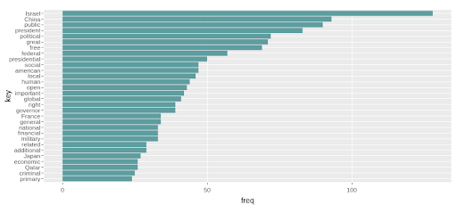
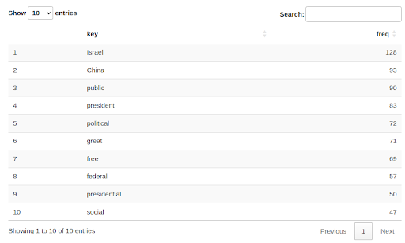
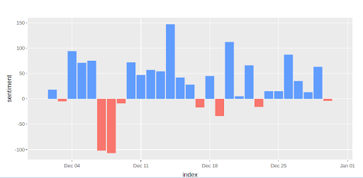

The purpose of this application is to provide a robust platform for national security analysts to monitor and analyze global media trends.
Our proposed dashboard mockup.
View topic keywords and their frequencies per selected news source and timeframe.
View the topic keywords and their frequencies in a searchable manner.
Display news sources' article sentiment over a period of time.